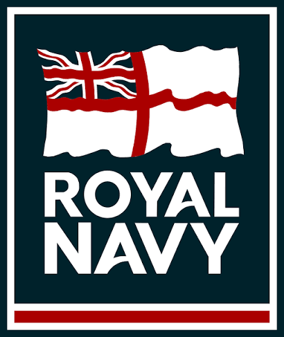
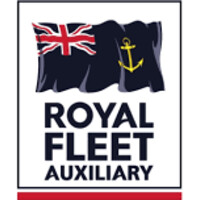
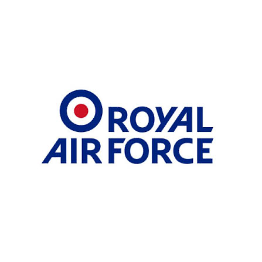
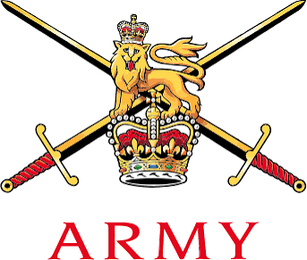
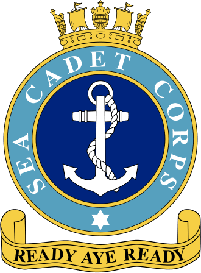
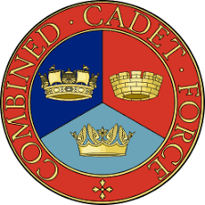
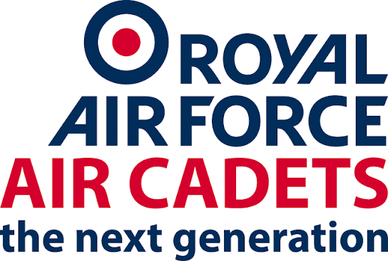
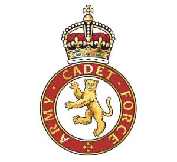

Join
Benefits of Membership
Joining the RNVR Yacht Club offers members the following opportunities:
Well-organised sailing weekends and longer cruises in UK waters, across the Channel and in warmer waters.
Excellent social events, both formal and informal, in various parts of the UK but principally in London and the South. This includes the prestigious Annual Dinner with respected guest speakers including RN Flag Rank officers.
Eligibility for a permit to wear the undefaced Blue Ensign.
Participation in Naval ceremonies to commemorate Naval history and to uphold Naval traditions.
Members may use the facilities of Hornet Services Sailing Club at Gosport and The Royal Air Force Yacht Club at Hamble upon production of their Club Membership Card. They may also gain access to Royal Ocean Racing Club in London with a letter of introduction. Similar arrangements have also been made with a number of overseas clubs.
Who can join
Eligibility
Membership of the Club is restricted to persons over the age of 18 years who are British or Commonwealth citizens.
The Club welcomes the following:








- Past and present members of the RN, RNR, RNVR, RM, RMR, RFA, RNXS and URNUs.
- Members and former members of the British Army, RAF, their Reserves and University Units.
- Adult volunteers from MOD sponsored Cadet Force Units.
- For all of the above, their Commonwealth equivalents.
There is also a limited membership opportunity for British or Commonwealth citizens who are likely to advance the objects of the Club and who have, or have had, a Naval or yachting connection.
Subscription Rates
The annual subscription of £35 is due on 1st April payable by Direct Debit. In exceptional circumstances, we may offer other ways to pay.
Club Rules and Data Privacy Policy
Please read these carefully as upon election to membership new members are taken to have agreed to comply with them.
Choose your category
Membership Categories
List 1 Membership
- Serving, retired and former members of the Royal Naval Reserve and the other Reserves (past and present) of the Royal Navy, the Royal Marines and Commonwealth Navies
- Serving, retired and former members of the Royal Navy (including University Royal Naval Units), the Royal Marines, the Royal Fleet Auxiliary, RNXS
- Serving, retired and former uniformed adult volunteers from MOD sponsored naval Cadet Force Units
- All Commonwealth equivalents
List 1(J) Membership
- Serving, retired and former members of the British Army or Royal Air Force (including their University Units)
- Serving, retired and former members of their associated Reserves (past and present)
- Serving, retired and former uniformed adult volunteers from MOD sponsored units of Army Cadet Corps, Air Training Corps and their Combined Cadet Force
- All Commonwealth equivalents
List 2 Membership
- A Member's spouse or partner and their sons and daughters over the age of 18 years
- Serving or former cadets, over the age of 18 years, of HMS Conway, Pangbourne College or any similar institution recognised by the Committee
- Any other persons not otherwise eligible for List 1 or List 1(J) membership and whom the Committee consider suitable and likely to advance the objects of the Club and who have or have had a Naval or yachting connection
How to apply
Joining Instructions
Please choose your Membership category and complete the application form. Once your application is approved, our Treasurer will get in touch with you for payment which will be by Direct Debit mandate. Other ways to pay are available in exceptional circumstances.
L1(J) applicants will need the name of their Proposer in order to complete the form.
L2 applicants will need the names of their Proposer and two Seconders in order to complete the form.
If you have any questions or difficulties in completing your application, please get in touch with our Membership Secretary at membership@rnvryc.org.
Supporting applications
Proposers and Seconders
L1 Applicant: No proposer or seconder is required.
L1(J) Applicant: You will be required in your application form to provide the name of your proposer who must be an Officer of the Club, Committee member, List 1 or Life member who knows you. Please ask your proposer to email their statement of support of your application to the Membership Secretary.
L2 Applicant: You will be required in your application to provide the names of your proposer and two seconders. At least two of the members proposing or seconding you must be Officers of the Club, Committee members, List 1 or Life members all of whom must know you. Please ask your proposer to email their letter of recommendation to the Membership Secretary and ask your seconders to email the Membership Secretary to confirm they know you and support your application.
The number of List 1(J) and List 2 members is restricted by Rule. There may therefore be a waiting list pending a vacancy.
If you would like to join but do not know anyone to propose you and/or second you, please get in touch with the Commodore for help at commodore@rnvryc.org.
Ready to join?